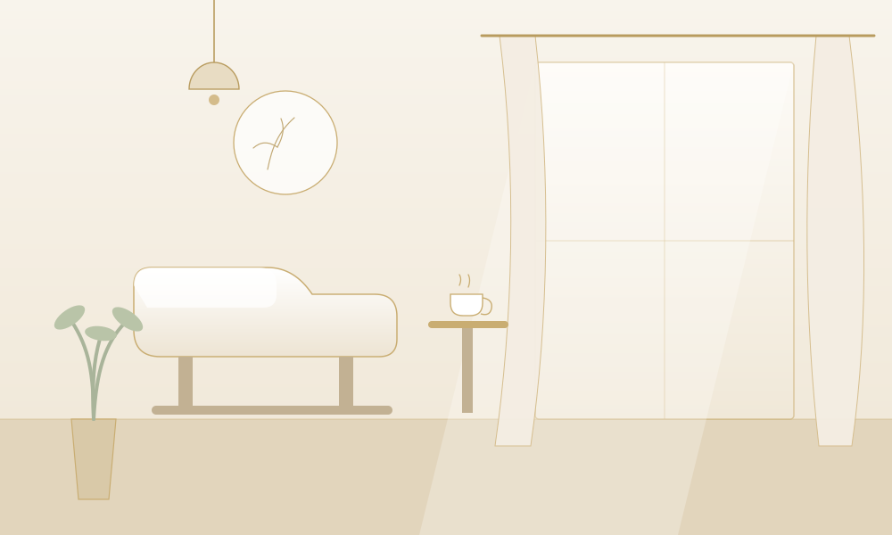

ABOUTLinoのこだわり・スタッフ紹介
CONCEPT
4つのこだわり
01
Design
上品な大人デザイン
トレンドを「上品」に落とし込むご提案
流行をそのまま追いかけるのではなく、お客様のライフスタイルや肌の色に合わせて、品よく長く愛せるデザインへ。オフィスでも浮かない絶妙なニュアンスが得意です。
豊富なカラーと厳選パーツ
シアー系を中心に常時200色以上をご用意。ゴールドの繊細なラインアートやミラーアートで、指先にさりげない煌めきを添えます。
02
Care
爪を傷めないケア
どこよりも丁寧な下処理
ジェルの持ちを左右するのは下準備。甘皮処理からサンディングまで、爪の状態を見極めながら一本ずつ丁寧に仕上げます。
爪にやさしいジェルを厳選
削らずに施術できるジェルを採用し、自爪を育てながら付け替えを続けられます。薄くなってしまった爪のリペアもお任せください。
03
Space
半個室の安らぎ空間

リクライニングでプライベートタイム
ゆったりとしたリクライニングチェアの半個室。施術中はうたた寝されるお客様も多い、静かで心地よい空間です。
ハーブティーでほっとひと息
ご来店時には季節のハーブティーをお出ししています。慌ただしい毎日から離れて、指先と心を整える時間をお過ごしください。
04
Hospitality
心を込めた接客
親身なカウンセリング
初回は通常より長めにカウンセリングのお時間をいただき、爪のお悩みやなりたいイメージをじっくり伺います。
無理な勧誘は一切ありません
メニューやオプションの押し売りはいたしません。お客様のペースで、長く通っていただけるサロンでありたいと考えています。
STAFF
ネイリストのご紹介
店長／トップネイリスト
桜井 美月Mizuki Sakurai
- 歴
- ネイリスト歴12年
- 資格
- JNECネイリスト技能検定1級／JNA認定講師
- 得意
- 上品なオフィスネイル・ブライダルネイル
ネイリスト
高梨 結衣Yui Takanashi
- 歴
- ネイリスト歴7年
- 資格
- JNECネイリスト技能検定1級
- 得意
- ニュアンスアート・シアーカラーの組み合わせ